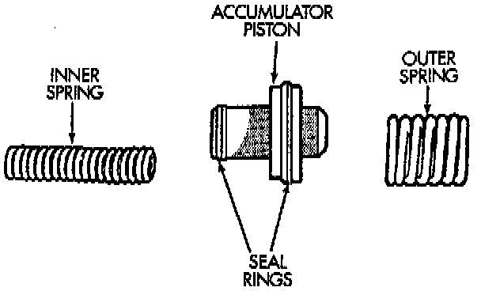

Accumulator

Inspect the accumulator piston and seal rings. Replace the seal rings if worn or cut. Replace the piston if chipped or cracked.
Check condition of the accumulator inner and outer springs. Replace the springs if the coils are cracked, distorted or collapsed.